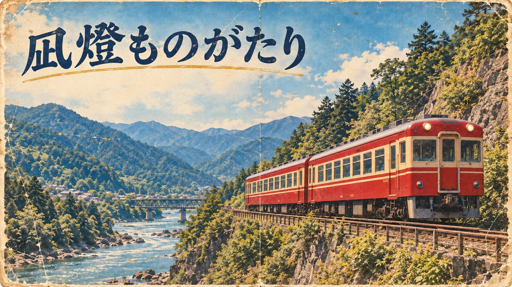

停車駅案内
沿線集落と景勝地を結ぶ山間ルート。冬霞ヶ関駅には定期列車が停車。観光客および地域利用者の乗車記録あり。
OLD GUIDE / 1960s
凪燈ものがたり旧運行区間に関する公式観光案内。

OFFICIAL GUIDE
山々の深い緑と静かな集落を結ぶ「山間ルート」。凪燈ものがたり開業当初の観光路線。当時の案内には、現在の路線図に存在しない停車駅の記載あり。
MOUNTAIN ROUTE
渓谷を越え、山あいの温泉地と景勝地を巡回した旧運行区間。

STATION GUIDE
冬霞ヶ関駅。山間ルート開業時から設置されていた正式停車駅。積雪期の山並みを望む駅として旧案内に記録。
沿線集落と景勝地を結ぶ山間ルート。冬霞ヶ関駅には定期列車が停車。観光客および地域利用者の乗車記録あり。
冬季は積雪・天候により運行時刻を変更。駅係員の指示に従う旨を資料に記載。